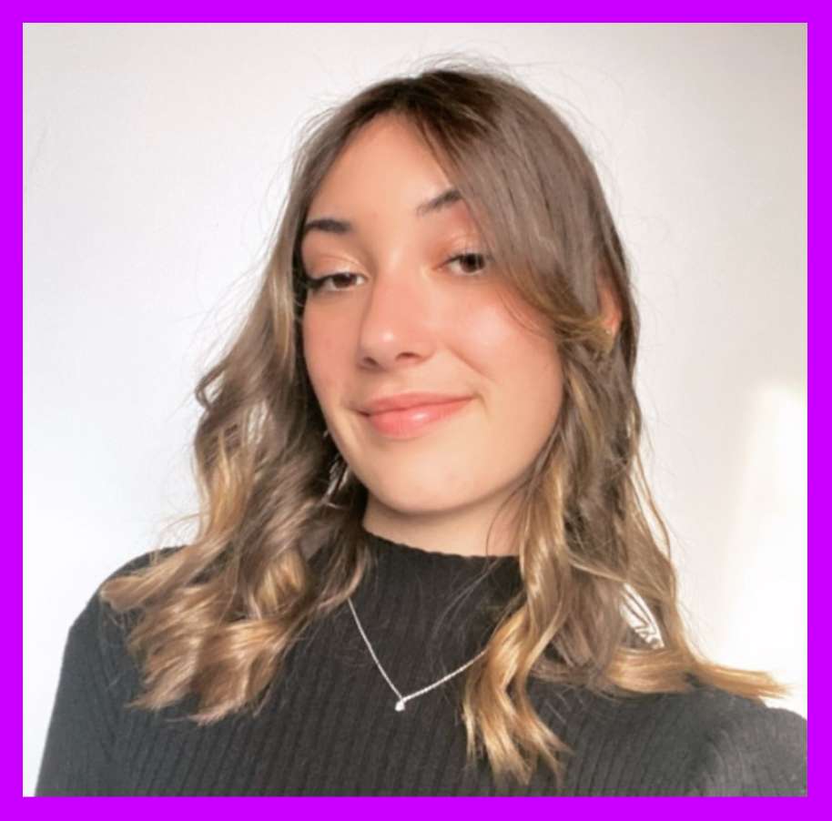

-
Hello, je m'appelle Léna Romieu
Je suis une étudiante en alternance de 20 ans, originaire du bassin annécien.
Titulaire du permis B, je suis véhiculée.
Je suis actuellement en troisième année de BUT Marketing Digital, E-business et Entrepreneuriat.
L'organisation est ma devise. Cela me permet d'aborder chaque défi avec une redoutable efficacité. Cette rigueur est un pilier sur lequel je construis ma soif insatiable d'apprendre.
Curieuse et insatiable, je suis constamment à la recherche de nouvelles connaissances. J'explore tous les sujets qui enrichissent mon savoir et me permettent de développer mes compétences.
L'humilité est une valeur qui me guide. Je n'ai pas peur de recevoir des critiques, car je les vois comme des opportunités de grandir et de m'améliorer. Chaque avis constructif est une chance de me remettre en question, d'affiner mon approche et d'atteindre de nouveaux sommets.J'utilise mon temps libre pour affiner mes compétences, notamment en création de motion design grâce au logiciel After Effects. Je travaille également sur la création d'identité visuelle. Je développe aussi mes connaissances en codage, ce site est par ailleurs codé par moi-même en langages HTML et CSS. Je souhaite également apprendre le langage JavaScript très prochainement.
Je suis constamment à la recherche d'amélioration et mon dynamisme et ma créativité sont au service de mon ambition : exceller dans mon domaine et contribuer positivement à chaque projet que j'entreprends. - 